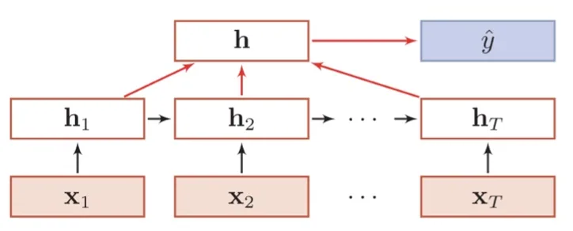
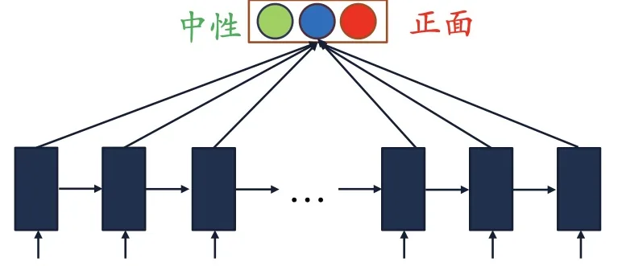
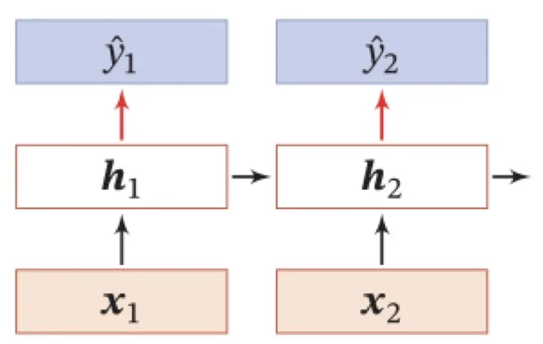
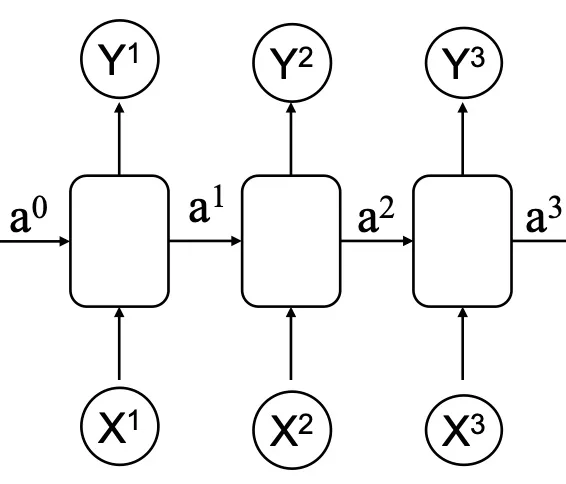
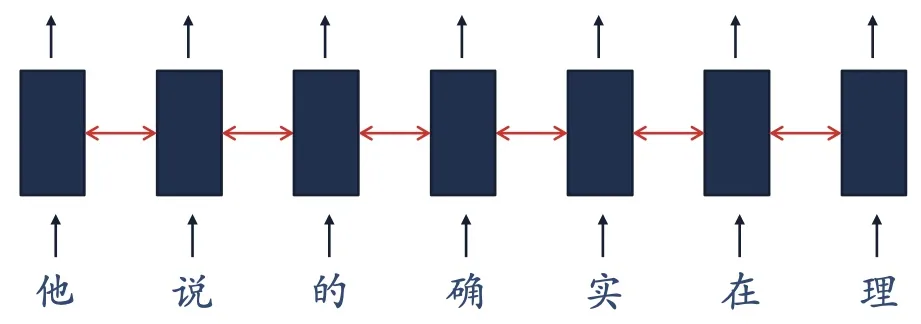
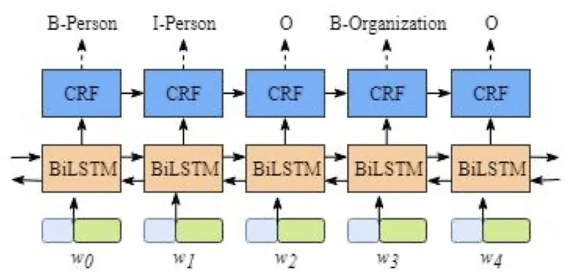
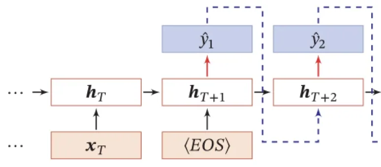
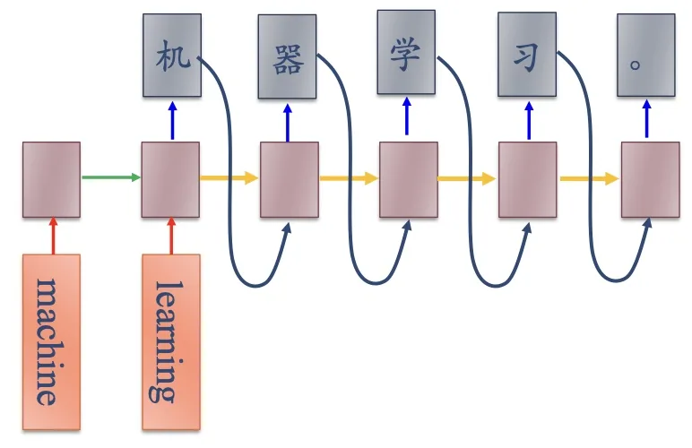

计算机视觉 · 第 7 章 循环神经网络
7.3 RNN 的三种序列建模模式
结构清楚了，接下来看它能做什么。课件把循环神经网络要解决的序列任务分成三类：序列到类别、同步的序列到序列、异步的序列到序列。三者的区别在于输入序列和输出序列的对应关系——是不是每个时刻都有输出、两个序列是否等长。本节按这三类逐一展开，每一类都配上课件给出的真实例子。
1. 三种任务模式
课件把待解决的任务种类列成三条：序列到类别（输入为序列，输出为一个类别）、同步的序列到序列模式（每一时刻都有输入和输出，两个序列长度相同）、异步的序列到序列模式（输入与输出没有严格的对应关系，长度也可以不同）。
这个划分抓住了实际任务的关键差别：有的任务要对整个序列下一个统一结论，有的任务要对序列的每一位分别下结论，还有的任务是把一个序列「翻译」成另一个序列。三类任务的网络接法各不相同，下面依次说明。
2. 序列到类别
最直接的一类是序列到类别：输入是一个序列，输出是一个类别。课件给的例子是文本分类——输入数据为单词的序列，输出为该文本的类别。
这类任务的接法是：把序列按时刻依次送进 RNN，让隐状态一路向后传递，最后拿末时刻的隐状态（或各时刻状态的汇总）接一个分类器，输出一个类别标签。序列的长度可以变化，但输出始终只有一个。

课件用情感分类把这一类任务具体化：输入是一条评论，输出是「正面」或「负面」。课件给了三个例子——「带着愉悦的心情看了这部电影」判为 Positive（正面），「这部电影太糟了」判为 Negative（负面），「这部电影很棒」判为 Positive（正面）。可以看到，判定的依据分散在整句话里：「愉悦」「很棒」是正面信号，「糟了」是负面信号，网络必须把它们积累到序列末尾再作判断。

3. 同步的序列到序列
第二类是同步的序列到序列模式：每一时刻都有输入和输出，输入序列和输出序列的长度相同。课件给的典型例子是词性标注——输入是词的序列，输出是与之等长的词性序列，第 i 个输出对应第 i 个输入。

课件随后给了三个同属这一类的例子，一个比一个复杂。
（1）自动寻找语句中的人名
第一个例子是在英文句子里自动标出人名。句子是「The courses are taught by Tom Zhao and David Chen.」，共 11 个词，对应输入 x1 到 x11；输出是一个等长的 0/1 序列 0 0 0 0 0 1 1 0 1 1 0，1 表示这个位置是人名。
对照着看，两个 1 的位置正好是「Tom Zhao」和「David Chen」——人名是由连续两个词组成的，模型必须同时判断「这个词像人名」和「它和上一个词连在一起才构成完整人名」。这正是同步序列到序列任务的味道：答案要落在每一位上，而每一位的判断又依赖上下文。
要让网络吃下这些词，先得做词汇数值化：建立一个词汇—数值一一对应的字典，把输入词汇转化为数值矩阵（课件举例用的是 100、1000、1001……这样的词编号）；输出侧同样用向量表示，第 t 位是哪一类就把哪一维置 1。这样，一句话就变成了一串向量，可以按时刻送进网络。

图 4 还透露了训练的方式：网络的输出不是「整句话一个标签」，而是每一时刻都有一个预测值，训练时与真值逐位比对、逐位计算损失。这个「每一时刻都有监督信息」的设定，正是下一节讲参数学习时的前提。
（2）中文分词
第二个例子是中文分词：将一个汉字序列切分成一个一个单独的词。它之所以也是同步的序列到序列任务，是因为输入是 n 个汉字，输出就是 n 个标记——每个字标一个位置标签，再按标签把字重新组合成词。
课件采用的标注方案里，S 表示单个字的词，B 与 E 分别表示一个词的开始与结束，于是「他 说 确 实」这类序列会被标成 S、S、B、E 这样的标签串；标签连起来看，词边界就出来了。

课件还留了一句关于「建模单位」的提醒：如果改以字而不是词作为基本单位，字典会更小，但对模型的要求更高，因为字一级的表示缺乏单词内部的联系——同样一个汉字在不同词里的含义差别很大，网络得更费力地去学。这也是后面第 8 章讲词向量时会反复遇到的问题。
（3）信息抽取
第三个例子是信息抽取（Information Extraction，IE）：从无结构的文本中抽取结构化的信息，形成知识。课件给的句子是「小米创始人雷军表示，该公司 2015 年营收达到 780 亿元人民币，较 2014 年的 743 亿元人民币增长了 5%。」——人读到的是句子，机器要拿到的是「雷军—创始人—小米」「2015 年—营收—780 亿元」这样的结构化片段。

图 6 里出现的 B-Person、I-Person、B-Organization 就是实体标签（B 表示实体开头，I 表示实体内部）；BiLSTM 是双向长短期记忆网络，它同时看前文和后文，比单向网络更适合标注任务；CRF（Conditional Random Field，条件随机场）加在输出层，用来约束相邻标签的合法性。这两个名字——双向结构和 LSTM——分别对应本章 7.8 节和 7.6 节的内容。
4. 异步的序列到序列
第三类是异步的序列到序列模式：输入序列和输出序列不需要有严格的对应关系，也不需要保持相同的长度。课件给的例子是机器翻译——输入为源语言的单词序列，输出为目标语言的单词序列，两种语言连词序和词数都不一样。
这类任务一般通过先编码后解码的方式实现：先将样本 x 按不同时刻输入一个 RNN（称为编码器），并得到它的编码 hT；然后再使用另一个 RNN（称为解码器），由这个编码出发得到输出序列。

图 7 右侧那些 hT+1、hT+2 与「〈EOS〉」标记说明了解码器的工作方式：它把一个时刻的输出当作下一个时刻的输入，一步一步把目标句子「写」出来，直到写出结束符。这也解释了为什么输入和输出可以不等长——两者的长度分别由各自的序列决定。

本节小结
- 序列任务分三类：序列到类别（整个序列对应一个类别）、同步的序列到序列（逐时刻对应、两个序列等长）、异步的序列到序列（对应关系与长度都不固定）。
- 序列到类别的做法是让隐状态累积整个序列的信息，最后在末时刻接分类器；课件的情感分类就是「整条评论 → 正面／负面」。
- 同步的序列到序列在每一时刻都有输出：人名识别把「The courses are taught by Tom Zhao and David Chen.」标成 0 0 0 0 0 1 1 0 1 1 0，两个 1 恰好落在两个人名上；中文分词用 S、B、E 标注词边界；信息抽取用 BiLSTM + CRF 抽实体。
- 处理文本前要先做词汇数值化：建立词汇—数值对应的字典，把词序列转成数值矩阵（向量序列），输出侧同样用向量表示。
- 异步的序列到序列用「编码器—解码器」结构：编码器把输入序列压成编码 hT，解码器从 hT 出发逐时刻生成输出序列，直到写下结束符。